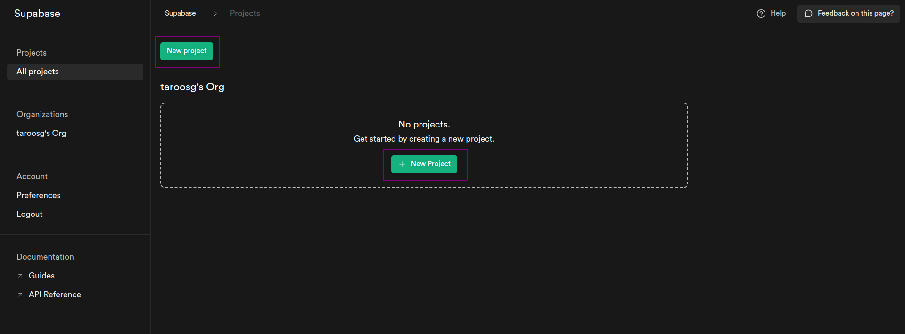
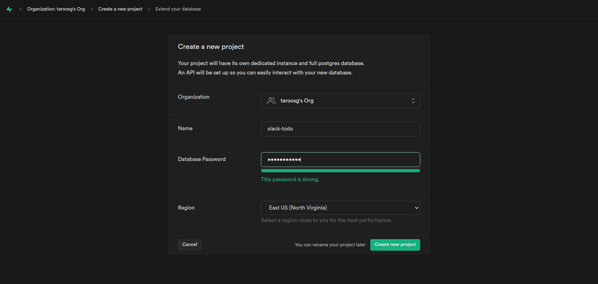
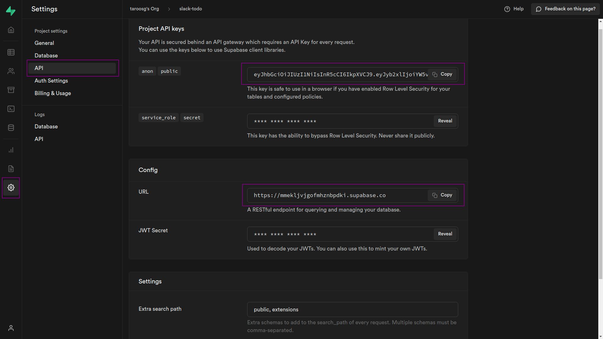

Supabase の準備
Supabase の準備
今回は NoSQL である Supabase を用いて CRUD 処理を実装してみる．
DB がオンライン上にあるので，環境問わず使えるところが魅力．
DB の作成
プロジェクト作成
Supabase のコンソール（https://app.supabase.io/）にアクセスし，GitHub アカウントでサインインする．
「New project」をクリックし，project を作成する．

プロジェクト名と DB アクセス用パスワードを設定する．面倒なパスワードを作成しないといけないので注意．
パスワードの条件はよくわからないが，以下の文字列でクリアできる．
QwertyZxcvbn102938-_

テーブルの作成
「左側の Table アイコン」→「Create a new table」の順にクリックし，テーブルを作成する．
テーブル名：todo_table
カラム：以下のとおり設定
| Name | Type | 備考 |
|---|---|---|
id | int8 | 初期設定のまま |
user_id | int8 | 追加 |
todo | varchar | 追加 |
deadline | date | 追加 |
is_done | bool | 初期値は false |
created_at | timestampz | 初期設定のまま |
updated_at | timestampz | created-at と同様 |
Node.js 側の準備
まず適当な場所で以下のコマンドを実行する．express-202203 はプロジェクトのディレクトリ名なので各自で設定して OK．
$ mkdir express-202203
$ cd express-202203
$ npm init -y
express-202203 ディレクトリをエディタで開き，今回の実装で必要なディレクトリとファイル（以下）を作成しておく．
-
app.js -
routes/todo.route.js -
controllers/todo.controller.js -
services/todo.service.js -
repositories/todo.repository.js
下記のような構成となっていれば OK！
.
├── app.js
├── controllers
│ └── todo.controller.js
├── package.json
├── routes
│ └── todo.route.js
└── services
└── todo.service.js
package.json の編集
下記 2 点の内容を追記する．
"type": "module",
↓ こちらは "scripts" 内に記述する．
"start": "node app.js",
追記後は以下のような状態．
{
"name": "express-202203",
"version": "1.0.0",
"type": "module",
"description": "",
"main": "index.js",
"scripts": {
"start": "node app.js",
"test": "echo \"Error: no test specified\" && exit 1"
},
"author": "",
"license": "ISC"
}
💡 Key Point
package.jsonに"type": "module"を追記することでimport形式で別ファイルを読みこむことができる． この追記を行わない場合，外部ファイルを読み込む際にはrequire()関数を用いる． React などではimportが基本となっており，こちらに揃えておいたほうがメリットが大きくオススメである．
Node.js と Supabase の連携
- Supabase の管理画面から「
⚙」→「API」の順にクリックする． Project API keysとConfigのURLが必要になるので確認する．

- プロジェクト直下に
.envファイルを作成し，以下の内容を記述する．これらの情報は機密情報なので環境変数を用いて管理する．
SUPABASE_API_KEY=`2で確認したAPI key`
SUPABASE_URL=`2で確認したURL`
- 以下のコマンドを実行し，環境変数を使用するためのライブラリをインストールする．
$ npm i dotenv
- プロジェクト直下に
.gitignoreを作成し，に以下の内容を追記して.envファイルを Git 管理外にする．
/node_modules
.env
- 下記コマンドを実行し，Node.js から Supabase を扱うためのライブラリをインストールする．
$ npm i @supabase/supabase-js
ここまででアプリケーションと Supabase を連携させる準備は完了．